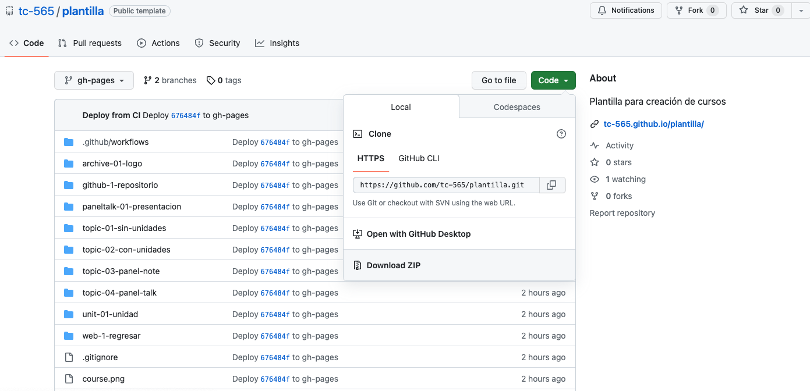
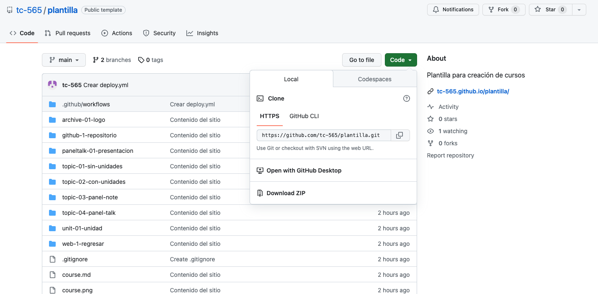

Cómo descargar un curso compilado y sin compilar
Una de las facilidades provistas por la manera en la que alojamos los cursos en GitHub es la posibilidad de descargar un curso como un sitio web local para uso offline, o la descarga del código fuente de un curso.
https://github.com/usuario/nombre-de-curso.gh-pages. Alternativamente, diríjase al enlace de la forma https://github.com/usuario/nombre-de-curso/tree/gh-pages.Code, y seleccione Download ZIP. index.html. Presiónelo dos veces para abrirlo con su navegador, o en su defecto presiónelo con click derecho, seleccione la opción de abrir con el navegador (Safari, Edge, Chrome, Firefox, etc).Esta modalidad está dirigida sobretodo para el desarrollo de cursos, por lo que si en realidad está interesado en descargar un sitio funcional, devuélvase al título Descarga de curso compilado.
Code, y seleccione Download ZIP. 